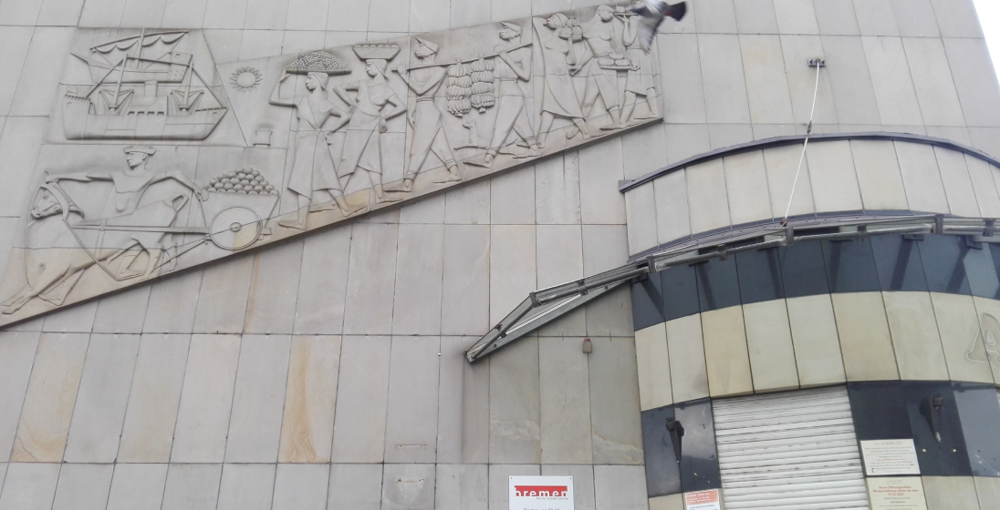

From the slave trade to the fruit trade to age estimations.
The history and present of the Fruchthof in Bremen

When migrants arriving in Bremen want to register as ‘unaccompanied minors’, they have to go to a building called the fruit yard (Fruchthof) for their age estimation by the youth welfare services (above). This building, in which national resources and access to living conditions and opportunities are distributed, is a manifestation of a past of violent transnational resource and food acquisition. The building is adorned with a relief depicting racially stereotyped figures carrying fruit such as bananas and pineapples. Towards them sail two large ships. Built in the 1950s for Scipio & Co., a fruit trade company, the fruit yard used to be an auction house for tropical fruits and a storehouse for bananas. The fruit trade company was a successor of the original Fruchhandel Co., founded in 1902 by Gustav Scipio and 56 tradesmen (Wilke 2004: 72), and its affiliated firm Jamaika-Bananen-Import Co. The company imported bananas from the Canaries and the West Indies and later from the United Fruit Company’s (UFC) plantations and popularised them as everyday food. Today, youth welfare officers conduct age estimations in the ‘fruit yard’, asking migrants their names, birthdates and details about their journeys to Europe. While migrants are repeatedly asked for their birth certificates, the same rigour is not applied to products in global commodity chains, such as clothing, technologies and food.
‘A great deal of capital, which appears today in the United States without any birth-certificate, was yesterday, in England, the capitalised blood of children’ (Marx 1867: 920, my emphasis) stated Marx, writing about ‘primitive accumulation’ and referring to child labour in English 19th-century factories. I turn the tables here. I do not ask the migrants about their birth certificates but rather ask the company about its ‘citizenship’ and the German nation about its citizenship policies. I do so with a focus on citizens’ and citizenships’ relation to migrant categorisations. I will first examine the fruit trade company’s history – where did the tradesmen obtain the starting capital of 500,000 Marks (Wilke 2004: 72)?
The ‘birth certificate’ of the fruit trade company
Bremen’s traders were deeply entangled with and profited from global maritime trade in oil, fruits, coffee and tobacco, for example. Bremen was one of Germany’s trade centres for colonial products (Binter 2017: 18). While millions of German emigrants left the continent through Bremen in the 19th century as settlers to the Americas, many of the ships on which they travelled returned with cotton and tobacco produced by enslaved people in the Southern states of the US (Ibid.: 17). This raw material was then processed and traded in Bremen. In 1850, for example, a sixth of Bremen’s population worked directly or indirectly in the tobacco industry (Ibid.). Many of the fruit trade company’s founding shareholders were sons of tobacco traders involved in the slave trade of the American South, wool traders involved in trade with settler colonies such as Australia and South Africa or directors and directors-at-large of Bremen’s shipping company Norddeutsche Lloyd (Wilke 2004: 72, Binter 2017). The Schütte brothers, for example, were sons of a tobacco merchant. They successfully invested their money in the oil business, shipping crude oil to Bremen from Pennsylvania (from where Native Americans had been displaced) for the first time in 1859 (Binter 2017: 18). In 1890, they founded the German-American Petroleum Company, together with John D. Rockefeller (son of a German settler family), of Standard Oil, from which Esso AG emerged. Esso AG was at the top of all stock corporations in the German Empire in the 1890s, contributing transnationally acquired resources to the national economy and to the establishment of the fruit trading company.
What made the establishment of the fruit trading company and the nourishment of Germans’ bodies with exotic fruit possible was migration. It was enabled, voluntary migration in the case of the merchants but forced displacement for Native Americans and enslaved Africans and a mixture of forced and enabled migration to different degrees for German emigrants. All of these were colonial migrations. Some scholars analysing today’s border regime in the context of colonialism write that, from today’s perspective, European emigrants during the period of colonialism and other European colonial actors can be categorised as ‘economic migrants’ (Mayblin and Turner 2021: 1; Achiume 2019). In fact, this designation describes the journeys of the shareholders of the fruit trading company well. They travelled to get rich. They travelled internationally and thus contributed to the growth of the German economy. I cannot follow all the manifold violent (post)colonial, capitalist relations manifested in just the one exemplary building mentioned here. It suffices to state that the very material building in which youth welfare service officers carry out age estimations today would not exist were it not for (post)colonial, imperial and capitalist trade relations (read: migrations of people and commodities) in which the fruit trade company had was founded, thrived and provided food to nourish German citizens’ bodies. This is somehow an ironic, coincidental effect of these relations. Many other buildings, features and riches of the city and of Germany would not exist without these relations and migrations (Binter 2017, Conrad 2010).
In a more general account, Fanon contended that ‘Europe was literally the creation of the Third World’ (1967: 81). In this process, food also played a major role, as Sidney Mintz showed for the production, trade and consumption of sugar (1986). Sugar, like other products of the transatlantic trade, was mainly the product of the labour of enslaved Africans and indentured labourers. It was their labour and the labour of indigenous people in the ‘New World’ that enabled the rise of industrialised capitalism in Europe (Ibid., Beckert 2015). The transatlantic slave trade was also significant in the industrialisation of German territories (Hernandez and Wiegkind 2018). Furthermore,
‘[s]ugar—or rather, the great commodity market which arose demanding it—has been one of the massive demographic forces in world history. Because of it, literally millions of enslaved Africans reached the New World, particularly the American South, the Caribbean and its littorals, the Guianas and Brazil. This migration was followed by those of East Indians, both Moslem and Hindu, Javanese, Chinese, Portuguese, and many other peoples in the nineteenth century. It was sugar that sent East Indians to Natal and the Orange Free State, sugar that carried them to Mauritius and Fiji. Sugar brought a dozen different ethnic groups in staggering succession to Hawaii, and sugar still moves people about the Caribbean‘ (Mintz 1986: 71).
These migrations also provided workers for the emerging banana economy in the end of the 19th century (Bourgois 1989).
Germans and the transnational banana trade
Ludwig H. Hein, a German migrants/settler into Central America, established the first of the larger banana plantations (Wilke 2004: 51). In Germany, Scipio and Bremen’s fruit trade company popularised the exotic fruit quickly, turning bananas from luxury products into everyday groceries (Wilke 2004). Banana imports were central to Bremen’s harbour economy (Ibid: 101). The import of so-called ‘Southern fruits’ (Südfrüchte) made fruit available throughout the year, irrespective of the local season. Initially, bananas were shipped mainly to Germany’s industrial centres, Saxony and Rhineland-Westfalia; later, they became popular all over the country (Ibid). Today, the banana is the second-most-purchased fruit in Germany, and the country is one of the top importers of bananas worldwide (Miserius and Behr 2021, OEC n.d.). Bremen’s fruit company later became Atlanta AG and eventually became the largest fruit importer in Germany. Today, it is part of Greenyard Co., a global fruit and vegetable company with a yearly turnover of 4.4 Billion euros (Greenyard 2022).
This ‘success story’ would not have been possible without the exploited labour on the world’s farms. In the case of banana plantations, this was often migrant labour, as Bourgois documented in his study of a UFC banana plantation (Bourgois 1989). To establish plantations, large spaces had to be cleared violently of jungle vegetation and the local inhabitants: ‘[The UFC] . . . ordered its foremen to get rid of the Indians. They’d say, “Chop the trees down on top of them; the company is taking responsibility”’ (Melendez in Bourgois 1989: 25). The UFC became one of the most powerful companies of the 20th century, famous for its huge properties in Central and South America, its exploitation of plantation workers, its suppression of labour conflicts and its ‘distinct preference for [and active support of] military dictatorships’ (Bourgois 1989: 17). Bremen’s fruit company cooperated with the UFC and brought the company’s ‘Chiquita banana’ to Germany. While thousands of labourers, among them many children and adolescents, die/d or are/were injured on banana plantations because of pesticides, for example (Dinham and Malik 2003; Andrade et al 2009), the banana became popular in Germany, throughout Europe and in the US as a cheap, healthy means of subsistence, especially for children. While the banana company favoured dictatorships on the production side of the agrifood-chain, at the consumer end of the chain, the banana ironically became a symbol for East Germans entering the ‘freedom’ of the newly reunified, capitalist Germany from the communist dictatorship GDR (where bananas had been scarce) (Rodden 2001). Having been diagnosed as having a ‘love affair’ with bananas in an intimate political history of the fruit, Germans eat an average of 11 kilograms of bananas per capita every year (Rodden 2001).
Migrant/citizen categories: national distribution of transnational food and revenues
The fruit yard building and the history of the fruit trade company can be seen as one of the results of transnational colonial–capitalist relations and as one contributing to them. At the same time, the building today is the site of age estimations conducted to regulate access to national resources, living conditions and opportunities. Age estimations are practices for regulating access to different classifications of migration (unaccompanied minors, adult asylum seekers, illegalised migrants) and in the long term also to the possibility of acquiring German citizenship. While resources are and have been acquired and exploited transnationally under very unequal conditions (i.e., through enabled migration of colonisers and merchants and forced migrations of enslaved humans), boundaries are drawn around national welfare states for the distribution of resources and opportunities via citizenship and migration categories (i.e., the attempt to govern and restrict migration). For example, proponents and practitioners of medical age estimations justify these practices as helping to achieve their goal of protecting the ‘increasingly scarce financial resources of the [national] state’ from the ‘abuse‘ of ‘benefits‘ by migrants (Parzeller 2015:22) by assessing the migrants’ ‘true’ identities.
Ayalet Shachar, a legal scholar, conceptualised birthright citizenship as a kind of inherited property in a world in which ‘citizenship laws assigning political membership by birthright play a crucial role in the distribution of basic social conditions and life opportunities on a global scale’ (2009:3). Shachar argues that newborn children gain or do not gain access to life and survival chances based on a ‘birthright lottery’ organised by citizenship laws. Food for her is a central indicator of survival chances, as
‘the lives of a quarter of all children under the age of five are, in the world’s poorest countries, at risk due to severe malnutrition […] [M]alnutrition contributes to more than half of all child deaths around the globe. The total stands at an incomprehensible 5.6 million children per year’ (Ibid:105).
While for Shachar, this grave inequality is mainly a given (to be overcome), other scholars showed how it was an outcome of global, colonial geopolitical and economic processes that produced and thrived on famines (Davis 2001). As one of the measures for governing this inequality, national citizenship and migration laws were developed and tightened severely in the 19th and 20th centuries along the lines of race and nationality (e.g., Sharma 2020, Bhambra 2017).
Global historian Sebastian Conrad elaborated on the formation of the German nation, especially around the turn of the 20th century in the German Empire, observing that ‘analytically, the constitution and transformation of the German nation need to be articulated with the imperial and global contexts in which it evolved’ (Conrad 2013:6). It is not a coincidence that the fruit trade company was founded during this same period of the German Empire. It was a period of intense globalisation and world market integration (Conrad 2010). It was also a period of mobility on an unprecedented scale, with 7 million Germans moving overseas just from Bremerhaven before World War I (Conrad 2010: 13). Despite this rural exodus to the New World and industrialising regions inside Germany, the growing urban population of the new nation had to be fed. For this, the nation’s belly became dependent on transnational, regulated migrant labour for its own agriculture and increasingly relied on food imports from outside the country (Ibid.). While nationalists were unsuccessful in their fight against bananas as non-German fruit, racist discourses and practices regarding Polish farm workers were widespread. With respect to transnational negotiations of nationality such as these, Conrad shows that emigration, immigration and agriculture were crucial for German nationalisation and nationalism around 1900.
Historians have shown how, from the inception of German citizenship at the end of the 19th century through its re-signification in 1913 and to the present day, differently hierarchised/categorised migrants – and especially migrant labour – were crucial for the hierarchisation of ‘German citizens’ from different categories of ‘foreigners’ (Alexopolou 2020). I add that migrant labour abroad and within Germany – as well as the enabled migration by settlers and (post)colonial merchants – was and is also important for feeding – and therefore re-creating – German citizens. Alexopolou shows how different forms of racism shaped and accompanied all these differentiating practices (Ibid.). Age estimations are among these citizen–migrant categorisation practices and, therefore, among the practices ‘play[ing] a crucial role in the distribution of basic social conditions and life opportunities on a global scale’.